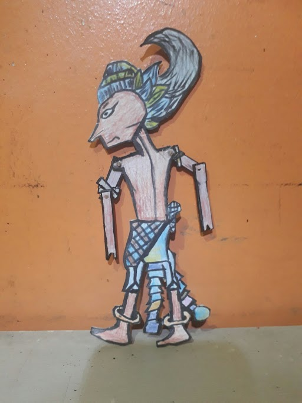
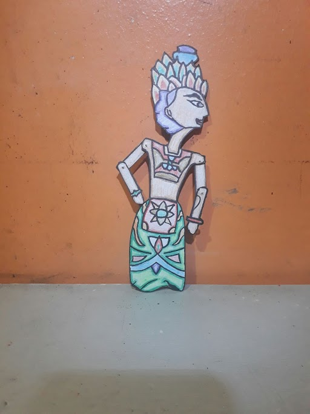

Sa isang maliit na pook sa kanayunan,
doon namumuhay si Juan,
isang simpleng magsasaka na may pusong malambot at pangarap na mahanap
ang tunay na pag-ibig. Isang araw, habang siya'y nag-aararo sa kanyang
bukid, napansin niya ang magandang dalagang nagngangalang Maria, na
naglalakad sa tabi ng ilog na umaagos sa kanilang lugar.

Mula sa unang pagkikita, hindi niya maiwasang maakit sa kanyang
kagandahan at kabaitan si Maria. Nagtuloy-tuloy ang mga pagkikita nila,
at sa bawat araw na nagdaan, lalong lumalim ang kanilang
pagkakaibigan. Mararamdaman ni Juan ang malalim na damdamin para
kay Maria, at hindi rin niya ito maiwasang isipin tuwing gabi.

Sa wakas, isang magandang araw, tinapunan ni Juan ng lakas ng loob ang
kanyang sarili at nagpasya na aminin ang kanyang pag-ibig kay Maria.
Tinungo niya ang tahanan ng dalaga, at doon, sa ilalim ng malamlam na
siklab ng araw, inilahad ni Juan ang kanyang nararamdaman. Ngunit hindi
siya sigurado sa reaksyon ni Maria.
Nagulantang si Maria, ngunit sa kabila ng kanyang gulat, naramdaman
niyang may mga damdamin din siya kay Juan. Si Juan, na puno ng takot,
ay nagpahayag ng pag-asa na sana ay magkatuluyan sila.
Sa paglipas ng mga buwan, lumalim ang pagmamahalan nina Juan at
Maria. Naglakbay sila sa buhay na magkasama, nagmula sa simpleng
kaibiganan tungo sa mas matibay na pag-ibig. Naging inspirasyon sila sa
isa't isa, at sa paglipas ng panahon, nagtayo sila ng kanilang tahanan sa
ilalim ng malamlam na buwan.
Ipinamalas nina Juan at Maria na ang tunay na pag-ibig ay maaaring
makamtan sa pamamagitan ng simpleng pagkakakilala at pag-aalaga sa
isa't isa. Ang kanilang pagmamahalan ay nagsilbing patunay na ang pag-
ibig ay mas matamis at makabuluhan kapag ito'y natagpuan sa mga
simpleng pook ng buhay, tulad ng munting kanayunan na kanilang tinubuan.